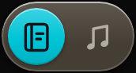
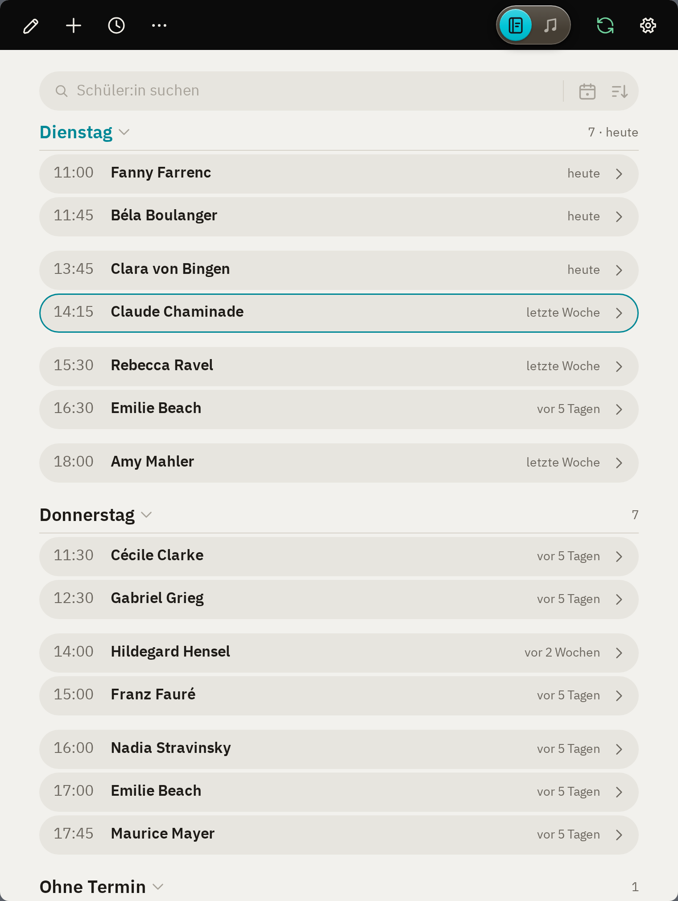
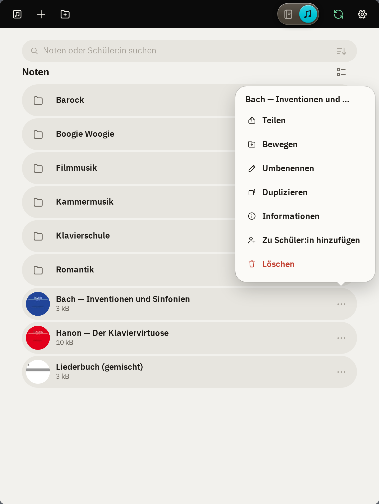
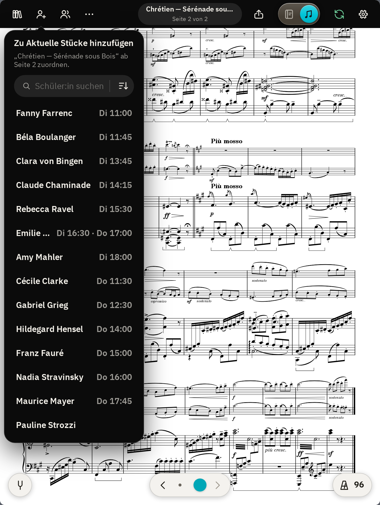
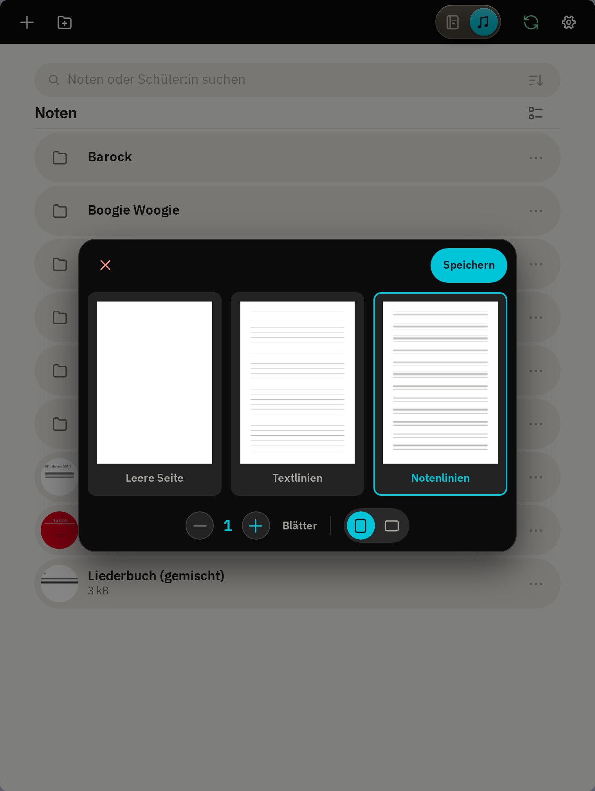

Einführung
Diese Anleitung stellt die Funktionen der App vor und gibt einen Überblick, der es ermöglichen soll, alles Weitere selbst zu entdecken.
Unterstützte Geräte
- iPad mit iPadOS 17 oder neuer
Notizen und Noten
Die App ist in zwei Hauptbereiche geteilt. Mittels Hauptschalter

in der Werkzeugleiste kann zwischen diesen Bereichen hin und her gewechselt werden. So liegen die Notiz zur Lektion und das Stück, an dem gerade gearbeitet wird, nie mehr als ein Tippen auseinander.
- umfasst den Stundenplan, die Seite jeder Schüler:in und die persönlichen Notizen.
- umfasst die Notenbibliothek und die Notenansicht mit Anmerkungen und Werkzeugen.
- Jeder Bereich öffnet dort, wo er verlassen wurde. So lässt sich während der Lektion beliebig hin- und herwechseln.
- Befindet man sich auf der Seite einer Schüler:in, öffnet ein Wechsel auf das erste Stück ihrer Liste, sofern nicht ein anderes ihrer Stücke bereits im Noten-Bereich geöffnet war.
- Mittels Doppeltippen oder Tippen auf den bereits geöffneten Bereich im Hauptschalter kann direkt die jeweilige Startseite angezeigt werden: der Stundenplan im Notizen-Bereich oder die Notenbibliothek im Noten-Bereich.
Daten
Alle Daten liegen auf deinem Gerät, mit optionaler Synchronisierung über deine eigene Cloud. Es sind gewöhnliche Dateien, Notizen in Markdown und Noten als PDF, lesbar auch ohne padago (siehe Daten und Synchronisation).
Notizen
Stundenplan
Die Startseite des Notizen-Bereichs ist der Stundenplan. Rechts von jeder Schüler:in steht, wann die letzte Notiz verfasst wurde. Ein Tippen auf den Namen öffnet die Seite der Schüler:in.


- Die laufende Lektion ist farbig umrandet.
- Ein Tippen auf einen Wochentag klappt ihn zu oder auf.
- Ein Tippen auf im Suchfeld zeigt nur den heutigen Tag.
- Mittels im Suchfeld lässt sich die Reihenfolge wählen: «Nach Stundenplan» oder «Alphabetisch».
- Ein Tippen auf in der Werkzeugleiste öffnet die laufende oder als nächstes folgende Lektion.
Schüler:innen hinzufügen
Ein Tippen auf in der Werkzeugleiste öffnet «Schüler:in hinzufügen».

- Zwingend erforderlich ist nur der Name.
- Mit neben der Dauer lässt sich ein weiterer Termin hinzufügen, für Schüler:innen, die mehrmals pro Woche kommen.
- «Hinzufügen und fertig» schliesst das Fenster.
- «Hinzufügen und weiter» lässt es offen, um eine weitere Schüler:in hinzuzufügen. Die Uhrzeit rückt dabei automatisch um die Dauer der hinzugefügten Schüler:in weiter.
Stundenplan bearbeiten
Ein Tippen auf in der Werkzeugleiste öffnet den Stundenplan im Bearbeitungs-Modus.

- Tag, Uhrzeit, Name und Dauer lassen sich direkt antippen und ändern. Geänderte Werte sind farbig umrandet.
- Mit am Ende der Zeile lassen sich Termine hinzufügen oder entfernen sowie Schüler:innen archivieren oder löschen.
- Gespeichert wird erst mit «Speichern». verwirft alle Änderungen und beendet das Bearbeiten. Mit und lassen sich einzelne Schritte rückgängig machen und wiederherstellen, mit alle Änderungen auf einmal zurücksetzen.
- Ein neuer Name benennt auch den Ordner der Schüler:in um.
- «Löschen» entfernt die Schüler:in und ihren Ordner unter «Notizen» im Ordner Padago. Ihre Notizen, Anmerkungen und Termine werden damit gelöscht, die Original-Noten bleiben in der Notenbibliothek. «Archivieren» entfernt sie nur aus dem Stundenplan, ihr Ordner bleibt erhalten (siehe Archiv).
Stundenplaner
Der Stundenplaner ( › «Stundenplaner») erleichtert die Planung sowie grosse Veränderungen am Stundenplan.

- Im oberen Teil befindet sich die Einteilung, während im unteren Teil alle noch nicht eingeteilten Schüler:innen aufgelistet sind.
- Um eine Schüler:in einzuteilen, wähle erst einen Platz im Stundenplan: «+ Beginn» am Anfang eines Tages, «+ weiter» an seinem Ende oder «+ Tag» für einen neuen Unterrichtstag. Die Uhrzeit des gewählten Platzes lässt sich antippen, um sie zu ändern. Tippe dann unten auf die gewünschte Schüler:in, um sie diesem Platz zuzuteilen. Der gewählte Platz rückt automatisch um ihre Dauer weiter, bereit für die nächste Schüler:in.
- Schüler:innen lassen sich auch an einen freien Platz ziehen. Auf eine bestehende Lektion gezogen, wird diese Zeit von beiden Schüler:innen besetzt, etwa für wöchentlich abwechselnden Unterricht.
- Eine von Hand geänderte Uhrzeit bleibt, wo sie ist. Überschneidungen sind erlaubt und rot markiert.
- Mit langem Drücken auf eine Schüler:in in der Liste unten lässt sich diese bearbeiten (Dauer, Termine pro Woche) sowie archivieren oder löschen.
- Mit lassen sich neue Schüler:innen hinzufügen.
- Gespeichert wird erst mit «Speichern». verwirft alle Änderungen und schliesst den Stundenplaner. Mit und lassen sich einzelne Schritte rückgängig machen und wiederherstellen, mit alle vorgenommenen Änderungen auf einmal zurücksetzen.
- Mittels lässt sich der Stundenplan leeren, etwa für ein neues Schuljahr. Alle Schüler:innen kommen dann zurück in die Liste unten.
Stundenplan importieren
Ein bestehender Stundenplan lässt sich importieren, etwa eine Liste der Schule oder eine eigene Tabelle. Er wird direkt auf dem iPad gelesen, die Datei verlässt das Gerät nicht.

- Im Stundenplaner auf tippen.
- «Datei» wählen oder «Text einfügen».
- Die bestehende Einteilung wird durch den gefundenen Stundenplan ersetzt.
- Die rot umrandeten Lektionen prüfen.
- Mit «Speichern» übernehmen.
- Rot markiert wird, was nicht sicher erkannt werden konnte: Namen, die nur fast mit bereits bestehenden Schüler:innen übereinstimmen, beim Import neu hinzugefügte Schüler:innen oder eine unklare Uhrzeit. Mittels Tippen auf eine markierte Schüler:in lässt sich diese überprüfen und gegebenenfalls anpassen.
- Bisherige Schüler:innen, die im importierten Stundenplan nicht vorkommen, bleiben in der Liste und lassen sich von Hand einteilen oder entfernen.
- Erkannt werden die üblichen Schreibweisen, als Liste oder als Tabelle:
Mo. 14:00–14:45 Fanny Farrenc 14.45 Béla Boulanger, 30 min Dienstag 14 Uhr Clara von Bingen 14h45 Claude Chaminade
Montag Dienstag 14:00 Fanny Farrenc Clara von Bingen 14:45 Béla Boulanger Claude Chaminade - Unterstützte Dateien: .docx, .xlsx, .odt, .ods, .pdf (nicht gescannt), .rtf, .html, .csv, .txt
Archiv
Inaktive Schüler:innen können archiviert statt gelöscht werden, um ihre Notizen und Dateien zu erhalten. Notizen, Stücke und Termine bleiben somit im Ordner Padago gespeichert.

- Das Archiv kann über den Link «Archiv ›» unter dem Stundenplan aufgerufen werden.
- Ein Tippen auf den Namen zeigt eine Zusammenfassung der Daten zu dieser Schüler:in.
- Mit kann die Schüler:in zurückgeholt werden.
- Mit kann die Schüler:in endgültig gelöscht werden.
Die Seite einer Schüler:in
Ein Tippen auf eine Schüler:in im Stundenplan öffnet ihre Seite. Diese ist in die zwei Unterbereiche «Notizen» und «Aktuelle Stücke» eingeteilt, zwischen denen mit dem Schalter unter der Werkzeugleiste gewechselt werden kann. «Notizen» enthält die Notizen zu ihren Lektionen, «Aktuelle Stücke» enthält eine Liste mit den Stücken, die ihr zugeordnet wurden (siehe Stücke zuordnen).
- An der Lektions-Fortschrittsanzeige unter der Werkzeugleiste kann während der Lektion abgelesen werden, wie viel Zeit bereits vergangen ist. Sie erscheint nur, wenn für den Termin eine Dauer eingetragen ist, und lässt sich unter Einstellungen › Allgemein ausschalten.
- Mit den Namen oben links und rechts kann direkt zur vorigen oder nächsten Schüler:in im Stundenplan navigiert werden.
Letzte und nächste Lektion
Unter «Notizen» steht zuoberst die Notiz der letzten Lektion. So ist auf einen Blick ersichtlich, woran zuletzt gearbeitet wurde.
- Ein Tippen auf «+ Di 11.5.21» erstellt die Notiz für die nächste Lektion gemäss Stundenplan, für die noch keine Notiz existiert.
- Mit «+ Anderes Datum» lässt sich eine Notiz für ein beliebiges Datum erstellen, zum Beispiel um eine Lektion nachzutragen.
- «Alle Notizen ›» zeigt alle bisherigen Notizen der Schüler:in.
Sobald es eine Notiz für heute gibt, erscheint sie unter der letzten Lektion als «Aktuelle Lektion».

- Mit lässt sich eine Notiz bearbeiten, mit löschen.
- Aufgaben lassen sich mit einem Tippen auf den Kreis abhaken, ohne die Notiz zu öffnen.
Notizen schreiben
Eine neue Notiz beginnt standardmässig mit dem Namen der Schüler:in und dem Datum als Titel. Gespeichert wird laufend, auch ohne Schliessen der Notiz durch «Speichern».

- Die Leiste über der Notiz bietet die gängigsten Formatierungsoptionen. Zusätzliche Optionen sind im Vollbild-Editor vorhanden, erreichbar mittels .
- Mit einem Wischen mit dem Finger nach rechts über bestehende Listenpunkte lassen sich diese einrücken, nach links wieder ausrücken.
- Unter lässt sich die Notiz als Datei teilen, mit Formatierung kopieren (um sie z. B. als Aufgabe per E-Mail zu teilen) oder löschen.
- «Expertenmodus» unter zeigt die Notiz als Markdown, so wie sie in der Datei steht. «Vorschau» zeigt sie dort formatiert.
- Eine Notiz, die ausserhalb von padago in einer nicht unterstützten Schreibweise verfasst wurde, öffnet im Expertenmodus. Die betroffenen Stellen sind rot markiert; «Normal anzeigen» schreibt sie in eine unterstützte Schreibweise um, der Inhalt bleibt dabei erhalten.
- Ein Tippen auf das Datum über der Notiz ändert ihren Tag. Ein Tag, der schon eine Notiz hat, lässt sich nicht wählen.
- «Speichern» schliesst die Notiz.
Alle Notizen
«Alle Notizen ›» zeigt sämtliche Notizen einer Schüler:in, die neueste zuoberst, nach Schuljahren geordnet.

- Mit lässt sich eine Notiz direkt in der Liste bearbeiten, mit löschen.
- Der Schuljahresbeginn lässt sich unter Einstellungen › Notizen anpassen.
Aktuelle Stücke
Unter «Aktuelle Stücke» findet sich eine Liste der Stücke, an denen die Schüler:in gerade arbeitet.

- Ein Tippen auf ein Stück öffnet es in der Notenansicht, direkt auf der gewählten Startseite.
- Mit neben «Aktuelle Stücke» lassen sich Stücke aus der Notenbibliothek zuordnen.
- Mit langem Drücken lässt sich ein Stück an eine andere Stelle ziehen. In dieser Reihenfolge führt die Notenansicht von Stück zu Stück.
- Mit neben einem Stück lässt es sich teilen, umbenennen, archivieren oder entfernen. Ein neuer Name gilt nur für diese Liste, die Originaldatei behält ihren Namen.
- «Entfernen» nimmt das Stück nur von der Liste, die Originaldatei bleibt in der Notenbibliothek. «Archivieren» legt es in den «Archiv»-Bereich, von wo es sich mit «Wieder aufnehmen» zurückholen lässt. Ein Stück lässt sich auch direkt auf «Archiv» ziehen.
- Mit lassen sich mehrere Stücke auswählen und gemeinsam teilen, archivieren oder entfernen.
- Dieselbe Originaldatei kann mehrmals auf der Liste stehen, jedes Mal mit eigenem Namen und eigener Startseite. So lassen sich mehrere Stücke aus demselben Band einzeln zuordnen.
Persönliche Notizen
Die Persönlichen Notizen bieten Platz für Notizen, die sich keiner Schüler:in zuordnen lassen. Sie sind erreichbar über › «Persönliche Notizen» oder über eine unter Einstellungen › Gesten definierte Geste.

- legt eine neue Notiz an. Ihre erste Zeile wird als Titel in der Liste angezeigt.
- Das Suchfeld durchsucht Titel und Text. Mittels lassen sich die Notizen nach «Neueste zuerst», «Zuletzt geändert» oder alphabetisch sortieren.
- Mit neben einem Titel lässt sich die Notiz teilen, duplizieren oder löschen.
- Die Dateien liegen im Ordner «Persönlich» (siehe Der Ordner Padago).
Noten
Notenbibliothek
Die Startseite des Noten-Bereichs ist die Notenbibliothek: eine Übersicht über alle PDF-Dateien im Ordner «Noten» (siehe Der Ordner Padago).


- Ein Tippen auf ein Stück öffnet es in der Notenansicht.
- in der Werkzeugleiste öffnet das zuletzt geöffnete Stück in der Notenansicht.
- Mit › «Importieren» in der Werkzeugleiste lassen sich PDF-Dateien in den geöffneten Ordner importieren. Gibt es den Namen dort schon, erhält die neue Datei ein «(2)» hinter dem Namen. Noten lassen sich auch direkt über den Ordner Padago hinzufügen.
Ordner, Suche und Sortierung
Die Bibliothek lässt sich frei in Ordner gliedern, etwa nach Komponist:in, Stufe oder Besetzung. in der Werkzeugleiste legt im gerade geöffneten Ordner einen neuen an.
- Mit am Ende einer Zeile lässt sich ein Stück teilen, bewegen, umbenennen, duplizieren, einer Schüler:in zuordnen («Zu Schüler:in hinzufügen») oder löschen. «Informationen» zeigt die Angaben zur Datei.
- Mit langem Drücken lässt sich ein Stück oder Ordner aufnehmen und auf einen Ordner ziehen. Kurz über einem Ordner gehalten, öffnet sich dieser; über dem Ordnerpfad oder geht es eine Ebene höher.
- Mit am Ende des Ordnerpfads lassen sich mehrere Stücke und Ordner auswählen, auch aus verschiedenen Ordnern und Suchen. daneben bietet dann «Teilen» (als ZIP), «Bewegen», «Duplizieren», «Zu Schüler:in hinzufügen» und «Löschen» für alle auf einmal.
- Ein bewegtes oder umbenanntes Stück bleibt seinen Schüler:innen zugeordnet, samt Anmerkungen, auch wenn es in der Dateien-App bewegt wurde.
- Das Suchfeld durchsucht die ganze Bibliothek, auch die Ordnernamen: «bach invention» findet die Invention auch im Ordner «Bach». Der Name einer Schüler:in zeigt zuoberst die Stücke, an denen sie gerade arbeitet.
- Mittels im Suchfeld lässt sich die Reihenfolge wählen: «Alphabetisch», «Zuletzt verwendet», «Zuletzt hinzugefügt» oder «Dateigrösse». Ein zweites Tippen auf dieselbe kehrt sie um.
- «Zuletzt verwendet» findet das Stück der letzten Woche, dessen Name gerade nicht einfällt. «Dateigrösse» zeigt die grössten Dateien zuerst, etwa um sie zu optimieren.
Stücke zuordnen
Ein Stück, an dem eine Schüler:in arbeitet, wird ihr zugeordnet, zusammen mit der Seite, auf der es für sie beginnt. Unter «Aktuelle Stücke» auf ihrer Seite öffnet es dann direkt dort, statt auf Seite 1 eines dicken Hefts.


- In der Notenansicht: zur gewünschten Seite blättern, in der Werkzeugleiste antippen und die Schüler:in wählen. Die angezeigte Seite wird zur Startseite. Danach lässt sich ein eigener Name vergeben, etwa «Sonatine» für ein Stück aus einer Klavierschule.
- Auf der Seite der Schüler:in: neben «Aktuelle Stücke» öffnet die Bibliothek. Ein Tippen auf ein Stück zeigt seine Seiten, um die Startseite zu wählen; «Hinzufügen» fragt dann nach dem Namen.
- In der Notenbibliothek: › «Zu Schüler:in hinzufügen», auch für mehrere ausgewählte Stücke auf einmal. Sie beginnen dann auf Seite 1 und tragen den Namen der Datei.
- Dasselbe Heft lässt sich einer Schüler:in auch mehrmals zuordnen, jedes Mal mit eigener Startseite und eigenem Namen.
Unter «Aktuelle Stücke» stehen die Stücke in der Reihenfolge, in der sie in der Lektion drankommen.
- Ein Tippen öffnet das Stück auf seiner Startseite.
- Mit langem Drücken lässt sich ein Stück an einen anderen Platz ziehen. Auf «Archiv» gezogen, wird es archiviert.
- Mit lässt sich ein Stück teilen, umbenennen, archivieren oder entfernen. Die Datei bleibt in jedem Fall in der Bibliothek.
- Archivierte Stücke behalten ihre Startseite. Unter «Archiv» lassen sie sich mit «Wieder aufnehmen» zurückholen.
- Mit lassen sich mehrere Stücke auf einmal teilen, archivieren oder entfernen.
Ist ein zugeordnetes Stück geöffnet, steht unter der Werkzeugleiste der Name der Schüler:in.
- macht die angezeigte Seite zur Startseite; gefüllt heisst, sie ist es bereits. führt zurück zur Startseite.
- Links und rechts davon stehen das vorige und das nächste Stück der Schüler:in, ganz aussen die vorige und die nächste Schüler:in im Stundenplan. So lässt sich eine Lektion durchgehen, ohne die Notenansicht zu verlassen.
- Ein Tippen auf den Namen öffnet die Seite der Schüler:in.
- nimmt das Stück von ihrer Liste, ins Archiv oder ganz.
- in der Werkzeugleiste zeigt, welchen Schüler:innen das Stück zugeordnet ist.
Vorlagen
Mit › «Vorlagen» in der Notenbibliothek entsteht leeres Papier als eigenes PDF, etwa Notenpapier, um mit einer Schüler:in eine Übung aufzuschreiben.


- Zur Wahl stehen «Leere Seite», «Textlinien» und «Notenlinien», die Anzahl Blätter und Hoch- oder Querformat.
- «Speichern» fragt nach einem Namen und legt die Datei im gerade geöffneten Ordner ab.
- Wie jedes Stück lässt sich eine Vorlage einer Schüler:in zuordnen und mit Anmerkungen beschreiben.
- Leere Seiten lassen sich auch in ein bestehendes Stück einfügen (siehe Neu anordnen).
Notenansicht
Ein Stück öffnet bildschirmfüllend, ohne Leisten. Ein Tippen in die Mitte der Seite blendet die Werkzeugleiste oben und die Seitenleiste unten ein oder aus. Sie liegen über den Noten; die Seite bleibt, wo sie ist.
- führt zur Notenbibliothek, in den Ordner, in dem sie verlassen wurde.
- In der Mitte stehen Titel und Seite. Bei einem zugeordneten Stück ist der Titel der Name, den es bei der Schüler:in trägt; ein Tippen darauf benennt es um.
- teilt das Stück als PDF, bei einem zugeordneten Stück wahlweise mit den Anmerkungen der Schüler:in.
- ordnet das Stück einer Schüler:in zu (siehe Stücke zuordnen), öffnet die Anmerkungen.
- enthält die Darstellung, unter «Datei» die Bearbeitung des PDFs (Neu anordnen, Zuschneiden, Optimieren) und unter «Werkzeuge» das Whiteboard und die Klaviatur.
- Zwei Finger vergrössern die Noten bis aufs Dreifache, etwa für einen genaueren Blick auf eine dichte Stelle.
Umblättern
Ein Tippen auf das rechte Drittel der Seite blättert vorwärts, auf das linke zurück. Die Seiten davor und danach liegen schon bereit, so blättert auch ein grosser Scan ohne Wartezeit um.
- Mit der Seitenleiste unten lässt sich durch das ganze Stück springen. Beim Ziehen zeigt eine Vorschau die Seite, umgeblättert wird beim Loslassen.
- Unter Einstellungen › Noten lässt sich wählen, ob mit Tippen, Wischen oder beidem umgeblättert wird, mit welcher Animation («Ohne», «Stapeln», «Schieben» oder «Rollen») und ob bei zwei Seiten nebeneinander um eine oder um zwei Seiten.
- «Über das Stück hinaus», ebenfalls dort, blättert nach der letzten Seite weiter zum nächsten Stück der Schüler:in, mit «Alle» danach auch zur nächsten Schüler:in.
Darstellung
Wie die Seiten auf dem Bildschirm liegen, wird unter › «Darstellung» gewählt. Die vier Bilder zeigen die Möglichkeiten: oben für das quer gehaltene iPad, unten für das hochkant gehaltene, links jeweils zwei Seiten auf einmal, rechts eine halbe nach der anderen. Die Wahl gilt für alle Stücke.
- Zwei Seiten nebeneinander, wie auf dem Notenpult, auf dem quer gehaltenen iPad. Hochkant liegen zwei quer gedruckte Seiten übereinander.
- Halbseitig: Auf dem quer gehaltenen iPad füllt eine Seite die ganze Breite und wird in zwei Hälften gezeigt, erst oben, dann unten. Dazwischen lässt sie sich mit einem Finger nach oben oder unten ziehen. Halbseitig ersetzt dabei die zwei Seiten nebeneinander.
- Seitenwechsel in zwei Schritten: Auf dem hochkant gehaltenen iPad erscheint der Anfang der nächsten Seite oben, über dem bereits gespielten Teil, während unten die aktuelle Seite stehen bleibt. Wo sich die beiden treffen, lässt sich an der Linie am rechten Rand verschieben.
- Eine einzelne quer gescannte Seite in einem Heft, etwa eine Ausklappseite, wird für sich gezeigt; die übrigen bleiben paarweise.
- «Wärmeres Licht» legt stufenlos einen warmen Ton über die Seite, etwa für den Abend.
Neu anordnen
Ein Scan kommt selten so, wie er gebraucht wird: verdreht, mit überflüssigen Seiten oder mit der Wiederholung hinter einem Seitenwechsel. Unter › «Neu anordnen» erscheinen alle Seiten des Stücks als Kacheln, um das zu ordnen.
- Unter jeder Seite lässt sie sich entfernen, nach links oder rechts drehen oder duplizieren. Eine verdoppelte Seite erspart etwa bei einer Wiederholung das Zurückblättern.
- Seiten lassen sich an einen anderen Platz ziehen. Ein Tippen zeigt eine Seite gross.
- zwischen den Seiten fügt Seiten ein: leere aus den «Vorlagen» oder Seiten eines anderen Stücks aus der «Bibliothek».
- In der Werkzeugleiste lassen sich alle Seiten auf einmal drehen. Mit und lassen sich einzelne Schritte rückgängig machen und wiederherstellen, mit alle Änderungen auf einmal zurücksetzen.
- «Speichern» ersetzt die Datei, nach einer Rückfrage. «Speichern unter…» legt stattdessen eine Kopie an. Anmerkungen wandern mit ihren Seiten mit.
Zuschneiden
Unter › «Zuschneiden» lassen sich die Ränder eines Scans wegschneiden, damit die Noten den Bildschirm füllen.
- Die Seite liegt hinter einem Fenster: Was darin zu sehen ist, bleibt. Mit einem Finger lässt sich die Seite verschieben, mit zwei vergrössern oder verkleinern.
- Mit dem Regler unter dem Fenster lässt sich eine schief gescannte Seite gerade drehen. blendet ihn ein oder aus.
- findet die Noten auf der Seite und schneidet mit einem schmalen Rand zu. Wie breit der Rand bleibt, lässt sich unter einstellen.
- stellt die Seite wieder her, wie sie war.
- «Nur diese Seite» in der Werkzeugleiste legt fest, wofür der Zuschnitt gilt: nur diese Seite, alle Seiten oder ausgewählte.
- «Zuschneiden» ersetzt die Datei, nach einer Rückfrage.
Optimieren
Manche Scans brauchen lange zum Umblättern, andere sind grau statt weiss. Unter › «Optimieren» wird jede Seite neu aufgebaut: Das Papier wird weiss, die Noten schwarz, und umgeblättert wird ohne Verzögerung. Meist wird die Datei dabei auch kleiner.
- «Grau» passt für die meisten Scans. «S/W» ergibt die kleinsten und schnellsten Dateien und ist bei grauen Kopien oft schärfer als das Original. «Farbe» erhält farbige Stellen, etwa bei einem Faksimile. «Original» lässt die Seite, wie sie ist.
- Darunter lassen sich Helligkeit, Kontrast (bei «S/W» die Stärke), «Papier reinigen», Schärfe, Auflösung und Qualität einstellen.
- Die Seite zeigt das Ergebnis. Solange sie oder «Original» gedrückt wird, ist das Original zu sehen. Wischen blättert zur nächsten Seite, zwei Finger vergrössern.
- «Alle Seiten» legt fest, welche Seiten optimiert werden: alle, nur diese oder ausgewählte. Seiten, die schon schnell sind, bleiben unverändert, solange unter die Option «Schnelle Seiten unberührt lassen» eingeschaltet ist.
- «Optimieren» ersetzt die Datei, nach einer Rückfrage. «Speichern unter…» legt stattdessen eine Kopie an. Da jede Seite zu einem Bild wird, lässt sich Text darin danach nicht mehr markieren.
Anmerkungen
Anmerkungen werden direkt in die Noten geschrieben und für jede Schüler:in separat gespeichert. So trägt dasselbe Heft bei jeder Schüler:in ihre eigenen Fingersätze, und das PDF in der Bibliothek bleibt unverändert.

- Anmerkungen gehören immer zu einer Schüler:in. Geschrieben werden sie in einem Stück, das aus ihrer Liste geöffnet wurde (siehe Stücke zuordnen).
- Drei Wege führen hinein: in der Werkzeugleiste, den Apple Pencil auf die Seite setzen (der erste Strich wird schon geschrieben) oder mit dem Finger eine halbe Sekunde auf die Seite drücken.
- sichert die Anmerkungen. verwirft sie, mit Rückfrage, falls sich etwas geändert hat.
- Geblättert wird mit den Pfeilen neben der Seitenzahl.
- Die Leiste lässt sich an jeder Stelle verschieben, die kein Knopf ist. Zur Seite gezogen, wird sie zu einem schmalen Streifen am Bildschirmrand, mit dem aktuellen Pinsel, dem Radierer, Rückgängig und der Seite.
- Zwei Finger vergrössern die Seite auch hier, beim Schreiben bis aufs Achtfache, etwa für einen Fingersatz zwischen zwei Notenlinien.
- Bei zwei Seiten nebeneinander lässt sich über beide hinweg schreiben.
- Doppeltippen auf den Apple Pencil wirkt, wie es in den Einstellungen des iPads unter «Apple Pencil» festgelegt ist, etwa als Wechsel zwischen Pinsel und Radierer.
- Mit «Live» erscheinen die Anmerkungen gleichzeitig auf einem zweiten Gerät (siehe Live).
Pinsel
Links in der Leiste stehen die Pinsel, jeder in seiner Farbe. Ein Tippen wählt einen Pinsel, ein zweites öffnet seine Einstellungen.
- Einstellbar sind Grösse, Farbton, Sättigung, Helligkeit und Deckkraft.
- Ein durchscheinender Pinsel wirkt wie ein Leuchtstift: Die Noten darunter bleiben schwarz, und mehrfaches Übermalen macht ihn nicht dunkler. Mit «Überlagerung» deckt er stattdessen wie Farbe, Schicht um Schicht, bis die Noten darunter verschwinden.
- fügt einen Pinsel hinzu. In seinen Einstellungen lässt er sich duplizieren oder löschen; in der Leiste lassen sich die Pinsel durch Ziehen umordnen.
Lineal
legt ein Lineal auf die Seite. Ein Strich, der am Lineal beginnt, wird gerade, etwa für einen Taktstrich oder eine Gabel; einer, der anderswo beginnt, bleibt frei.
- Mit einem Finger lässt sich das Lineal verschieben, mit zwei drehen. Beim Drehen wird der Winkel angezeigt; waagrecht, senkrecht und die Diagonalen rasten ein.
- Ein Strich, der auf das Lineal trifft, läuft an seiner Kante entlang. So enden etwa mehrere Gabeln bündig.
- Das Lineal bleibt liegen, während die Seite darunter vergrössert, verschoben oder umgeblättert wird.
- Ein weiteres Tippen auf nimmt das Lineal wieder weg.
Auswahl
Mit lassen sich Anmerkungen einkreisen, um sie zu verschieben, zu kopieren oder anzupassen. Ein zweites Tippen öffnet die Einstellungen.
- «Form»: «Freiform» oder «Rechteck». «Umfang»: «Ganze Striche» nimmt jeden berührten Strich ganz, «Fläche» nur den Teil innerhalb der Form, etwa einen halben Bogen.
- Mit einem Finger lässt sich die Auswahl verschieben, mit zwei drehen und vergrössern.
- Mit den Knöpfen über der Auswahl lässt sie sich duplizieren, kopieren, ausschneiden oder anpassen: Grösse und Farbe aller ausgewählten Striche auf einmal.
- Kopiertes wird mit einem Tippen eingefügt, auch auf einer anderen Seite oder auf dem Whiteboard. Es lässt sich dann behalten, an die ursprüngliche Stelle setzen oder verwerfen.
Radierer
Auch wird mit einem Tippen gewählt und mit einem zweiten eingestellt.
- «Ganze Striche» entfernt jeden berührten Strich ganz. «Fläche» radiert wie ein Radiergummi, in der eingestellten Grösse.
- leert die Seite. Sind zwei Seiten zu sehen, lässt sich wählen, welche.
- Mit und lassen sich einzelne Schritte rückgängig machen und wiederherstellen, auch über das Umblättern hinweg.
Werkzeuge
Ist die Werkzeugleiste eingeblendet, stehen unten links das Stimmgerät und unten rechts das Metronom. Whiteboard und Klaviatur sind unter › «Werkzeuge». Unter Einstellungen › Gesten lassen sie sich auch auf eine Geste legen.

Metronom
Ein Tippen auf öffnet das Metronom. Langes Drücken startet oder stoppt es, ohne es zu öffnen.
- Das Tempo lässt sich auf mehrere Arten ändern: den Drehregler drehen, auf die Skala darum herum tippen oder entlangfahren, die Zahl antippen und eintippen, oder mit − und +. Von − oder + weg gewischt, ändert es sich um fünf (zur Seite) oder um zehn (nach oben).
- Mehrmaliges Tippen auf den Drehregler («Tippen») übernimmt das getippte Tempo.
- «Takt» legt die Schläge pro Takt fest, bis zwanzig.
- Unten: «Aus», «Hörbar», «Sichtbar» oder «Beides». «Sichtbar» lässt den Bildschirmrand im Takt aufleuchten, gut zu sehen aus dem Augenwinkel.
- Bei einem zugeordneten Stück merkt sich das Metronom Tempo und Takt, für jede Schüler:in einzeln.
- Unter lassen sich die Farbe für «Sichtbar» und das Verhalten des Drehreglers einstellen.
- Wird die App verlassen, pausiert das Metronom und läuft beim Zurückkehren weiter.
Stimmgerät
Ein Tippen auf öffnet das Stimmgerät. «Stimmgerät» zeigt, welcher Ton gespielt wird und wie weit er danebenliegt; «Stimmton» spielt einen Ton zum Einstimmen.
- Die Nadel zeigt die Abweichung in Cent. Stimmt der Ton, färbt sich die Anzeige.
- Der «Kammerton» lässt sich von 415 bis 466 Hz einstellen.
- «Transposition» ist für transponierende Instrumente: Angezeigt wird der notierte Ton, für eine Klarinette in B also h¹, wo a¹ erklingt.
- lässt das Stimmgerät nach dem Schliessen über den Noten stehen, um beim Spielen zu stimmen. Langes Drücken auf tut dasselbe direkt.
- «Stimmton» zeigt die zwölf Töne im Kreis; ▶ in der Mitte spielt den gewählten.
- Unter lassen sich unter anderem Mikrofonempfindlichkeit, Präzision, Farbe, die Grösse über den Noten und die Notennamen (H · Ais oder B · A♯) einstellen, und ob die Töne des Stimmtons chromatisch oder im Quintenzirkel stehen.
- Das Mikrofon ist nur eingeschaltet, solange das Stimmgerät zu sehen ist.
Klaviatur
› «Klaviatur» legt eine Klaviatur mit 88 Tasten an den unteren Bildschirmrand, um einen Ton vorzuspielen oder einen Akkord zu halten, auch wo kein Klavier steht.
- Ein Ton klingt, solange die Taste gedrückt ist; mehrere Tasten klingen zusammen.
- Mit der Leiste über den Tasten lässt sich durch die Klaviatur fahren, mit − und + die Breite der Tasten ändern.
- Unter lassen sich Notennamen, Oktaven und Kammerton einstellen.
- Die Noten bleiben, wo sie sind; die Klaviatur deckt den unteren Teil der Seite ab.
- schliesst die Klaviatur.
Whiteboard
Das Whiteboard ist eine leere Seite zum Erklären und Skizzieren. Es öffnet über › «Whiteboard», in der Notenansicht wie im Stundenplan.

- Pinsel, Lineal, Auswahl und Radierer funktionieren wie bei den Anmerkungen.
- «Linien» bietet «Leer», «Textlinien» oder «Notenlinien», mit einstellbarer Dicke, Abstand und Grösse.
- öffnet auch hier die Klaviatur, teilt das Whiteboard als PDF.
- schliesst das Whiteboard. Was darauf steht, bleibt bis zum nächsten Mal; leert es.
- Das Whiteboard gehört keiner Schüler:in. Was darauf steht, bleibt von den Anmerkungen in den Noten getrennt.
Einstellungen
Allgemein
Folgt.
Notizen
Folgt.
Noten
Folgt.
Gesten
Folgt.
Exportieren
Folgt.
Daten
Der Ordner Padago
Alle Daten werden in einem Ordner auf dem iPad gespeichert, in der Dateien-App unter «Auf meinem iPad» › «padago» › «Padago». Dieser Ordner kann jederzeit aus padago heraus angezeigt werden: «Einstellungen» › «Speicher» › «In Dateien zeigen».
Darin liegen zwei Unterordner:
- Noten: die Notenbibliothek, als PDF-Dateien, beliebig in Unterordner geordnet.
- Notizen: ein Ordner pro Schüler:in mit den Notizen, den zugeordneten Stücken und den Anmerkungen. Dazu «Persönlich» für die persönlichen Notizen und «archiv» für archivierte Schüler:innen.
Es sind gewöhnliche Dateien, lesbar auch ohne padago (siehe Die Dateien ausserhalb von padago).
Die Dateien ausserhalb von padago
Folgt.
Synchronisation
Speicherort: iPad oder Nextcloud
Folgt.
Nextcloud verbinden
Folgt.
Ohne Verbindung
Folgt.
Live
Folgt.